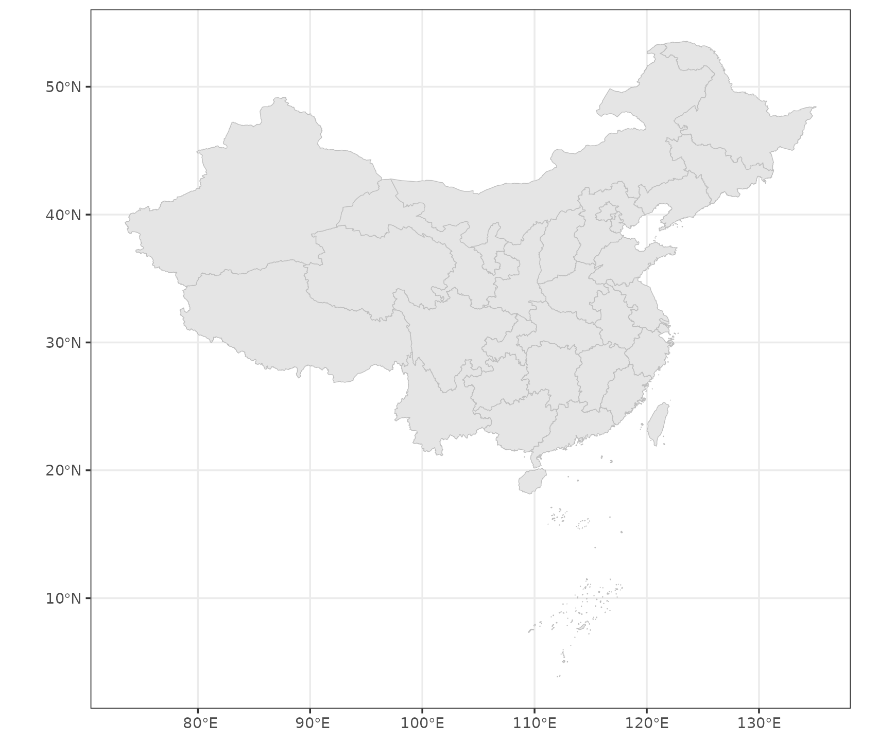
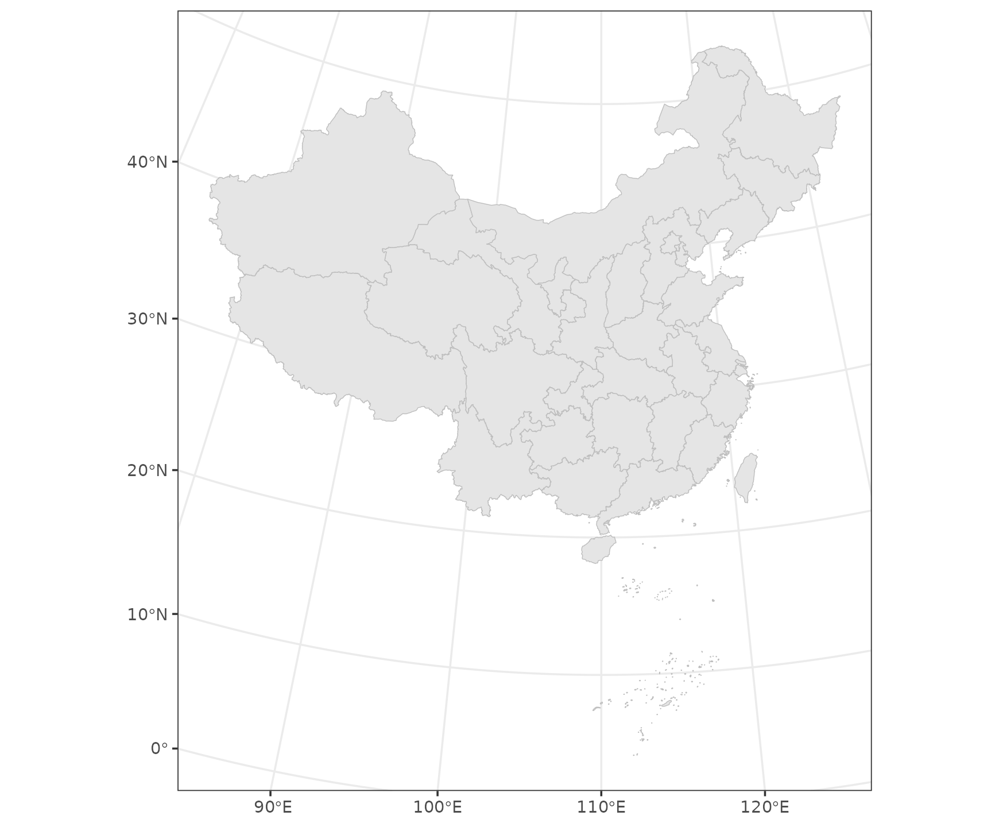

The geocn package provides various commonly used spatial data related to Chinese regions in the R programming environment. This vignette presents a quick intro to geocn.
Available data sets
The geocn package covers 19 spatial data sets,
including a variety of relevant data from both the global and Chinese
regions. You can view what data sets are available using the
list_geocn() function.
library(sf)
## Linking to GEOS 3.10.2, GDAL 3.4.1, PROJ 8.2.1; sf_use_s2() is TRUE
library(geocn)
library(ggplot2)
datasets_geocn = list_geocn()
datasets_geocn
## # A tibble: 19 × 2
## functions results
## <chr> <chr>
## 1 load_world_country Global Country Boundaries
## 2 load_world_continent Global Continents
## 3 load_world_coastline Global Coastlines
## 4 load_world_ocean Global Oceans
## 5 load_world_lake Global Lakes
## 6 load_world_river Global Rivers
## 7 load_cn_province Province-Level Administrative Units in China
## 8 load_cn_city City-Level Administrative Units in China
## 9 load_cn_county County-Level Administrative Units in China
## 10 load_cn_border China's Land Border Line and the 10-dash line of the…
## 11 load_cn_landborder China's Land Border
## 12 load_cn_coastline Coastline of China
## 13 load_cn_tenline 10-dash line of the South China Sea
## 14 load_cn_landcoast China's Land Border and Coastline
## 15 load_tibetan_plateau Tibetan Plateau Boundary
## 16 load_loess_plateau Loess Plateau Boundary
## 17 load_yangtze_basin Yangtze River Basin Boundary
## 18 load_yellow_river_basin Yellow River Basin Boundary
## 19 load_weihe_basin Weihe River Basin BoundaryCommonly Used CRS for Drawing Maps of China
The load_cn_alberproj() function can be used to obtain
the CRS information available in the sf and
terra packages. By default, it returns in
sf format. However, you can specify the return format
through the output parameter.
albers = load_cn_alberproj()
province = load_cn_province()
## Warning in CPL_read_ogr(dsn, layer, query, as.character(options), quiet, : GDAL
## Message 1: organizePolygons() received a polygon with more than 100 parts. The
## processing may be really slow. You can skip the processing by setting
## METHOD=SKIP.
ggplot(data = province) +
geom_sf(fill = 'grey90', color = 'grey') +
theme_bw()
province_albers = st_transform(province,albers)
ggplot(data = province_albers) +
geom_sf(fill = 'grey90', color = 'grey') +
theme_bw()
Region-specific CRS Transformation in China
This section primarily focuses on the conversion between the GCJ02,
BD09, and WGS84 coordinate systems. The geocn provides
st_transform_cn() function to achieve the conversion. You
need to input the longitude and latitude coordinate vectors to be
transformed as function parameters lon and
lat, and specify the CRS before transformation and the CRS
to be transformed. Please note that in the
st_transform_cn() function, the from and
to parameters respectively refer to wgs,
gcj, bd for WGS84,
GCJ02, BD09 coordinate systems. Default
Conversion from GCJ02 to WGS84.
lon = c(126.626510,126.625261,126.626378,126.626541,126.626721,126.627732,126.626510)
lat = c(45.731596,45.729834,45.729435,45.729676,45.729604,45.730915,45.731596)
st_transform_cn(lon,lat)
## # A tibble: 7 × 2
## lon lat
## <dbl> <dbl>
## 1 127. 45.7
## 2 127. 45.7
## 3 127. 45.7
## 4 127. 45.7
## 5 127. 45.7
## 6 127. 45.7
## 7 127. 45.7